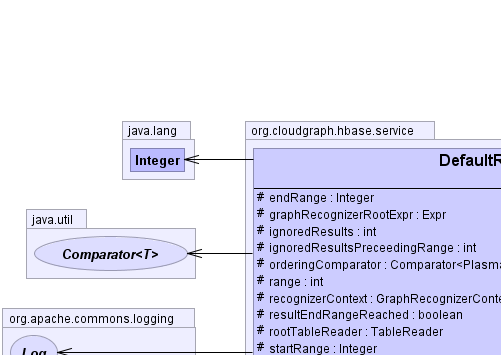
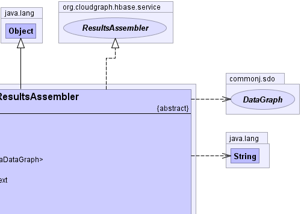
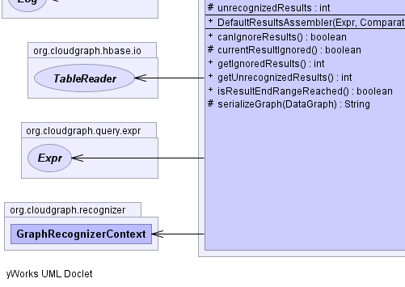
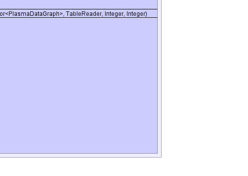

public abstract class DefaultResultsAssembler extends java.lang.Object implements ResultsAssembler
Expr,
GraphRecognizerContext|  |  |
|  |  |
| Modifier and Type | Field and Description |
|---|---|
protected java.lang.Integer |
endRange |
protected Expr |
graphRecognizerRootExpr |
protected int |
ignoredResults |
protected int |
ignoredResultsPreceedingRange |
protected java.util.Comparator<org.plasma.sdo.PlasmaDataGraph> |
orderingComparator |
protected int |
range |
protected GraphRecognizerContext |
recognizerContext |
protected boolean |
resultEndRangeReached |
protected TableReader |
rootTableReader |
protected java.lang.Integer |
startRange |
protected int |
unrecognizedResults |
| Constructor and Description |
|---|
DefaultResultsAssembler(Expr graphRecognizerRootExpr,
java.util.Comparator<org.plasma.sdo.PlasmaDataGraph> orderingComparator,
TableReader rootTableReader,
java.lang.Integer startRange,
java.lang.Integer endRange) |
| Modifier and Type | Method and Description |
|---|---|
boolean |
canIgnoreResults()
Returns whether results may be ignored under the current context.
|
protected boolean |
currentResultIgnored() |
int |
getIgnoredResults() |
int |
getUnrecognizedResults() |
boolean |
isResultEndRangeReached() |
protected java.lang.String |
serializeGraph(commonj.sdo.DataGraph graph) |
clone, equals, finalize, getClass, hashCode, notify, notifyAll, toString, wait, wait, waitcollect, getResults, sizeprotected Expr graphRecognizerRootExpr
protected GraphRecognizerContext recognizerContext
protected java.util.Comparator<org.plasma.sdo.PlasmaDataGraph> orderingComparator
protected TableReader rootTableReader
protected java.lang.Integer startRange
protected java.lang.Integer endRange
protected boolean resultEndRangeReached
protected int unrecognizedResults
protected int ignoredResults
protected int ignoredResultsPreceedingRange
protected int range
public DefaultResultsAssembler(Expr graphRecognizerRootExpr, java.util.Comparator<org.plasma.sdo.PlasmaDataGraph> orderingComparator, TableReader rootTableReader, java.lang.Integer startRange, java.lang.Integer endRange)
public int getUnrecognizedResults()
getUnrecognizedResults in interface ResultsAssemblerpublic int getIgnoredResults()
getIgnoredResults in interface ResultsAssemblerpublic boolean isResultEndRangeReached()
isResultEndRangeReached in interface ResultsAssemblerpublic boolean canIgnoreResults()
ResultsAssemblercanIgnoreResults in interface ResultsAssemblerprotected boolean currentResultIgnored()
protected java.lang.String serializeGraph(commonj.sdo.DataGraph graph)
CloudGraph® is a registered trademark of TerraMeta Software, Inc. Copyright © 2014 - All Rights Reserved.